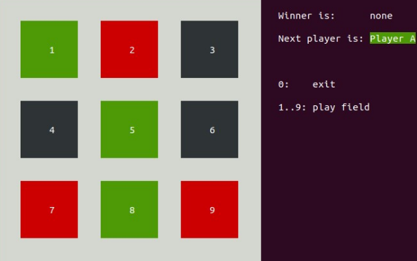

05 - Arrays/Strings/TicTacToe¶
1. Übersicht¶
In diesem Praktikum werden Sie in der ersten Aufgabe ein Programm zum Einlesen, Sortieren und Ausgeben von Strings von Grund auf entwickeln.
In der zweiten Aufgabe werden Sie einen Programmrahmen zu einem funktionierenden TicTacToe-Spiel erweitern. Sie implementieren hierbei die fehlenden Funktionen bis alle Tests erfolgreich durchlaufen. Die gewählte Vorgehensweise entspricht somit Test-Driven-Development (TDD). D.h. es existieren zuerst Tests, welche alle fehlschlagen. Schrittweise werden die Funktionen implementiert bis alle Tests erfolgreich durchlaufen. Wenn die Tests erfolgreich durchlaufen, wird auch das Programm funktionieren.
2. Lernziele¶
In diesem Praktikum schreiben Sie selbst von Grund auf ein C-Programme, das mit Strings operiert. Ferner ergänzen Sie ein bestehendes und lernen dabei den Zugriff auf Arrays.
Sie können mit Arrays von Strings umgehen.
Sie können String-Funktionen aus der Standard Library verwenden.
Sie können anhand einer Beschreibung im Code die fehlenden Funktionen die auf Arrays zugreifen implementieren.
3. Aufgabe 1: Sortieren von Strings¶
Schreiben Sie ein C-Programm, das bis zu 10 Wörter mit einer maximalen Länge von jeweils 20 char von der Tastatur einliest, diese in Grossbuchstaben umwandelt, in einem Array der Reihe nach ablegt und zum Schluss im Array alphabetisch sortiert und ausgibt. Wiederholt eingegebene Wörter sollen dabei ignoriert werden. Das Ende der Eingabe soll durch das Erreichen der zehn unterschiedlichen Wörter oder durch die Eingabe von „ZZZ“ erfolgen. Die Ausgabe der sortierten Wörter soll direkt nach Beendigung der Eingabe erfolgen.
Hinweise:
Zur Speicherung der Wörter sollten Sie ein zweidimensionales Array verwenden.
Verwenden Sie die String-Funktionen der C Standard Library (include <string.h>), z.B. um Strings alphabetisch zu vergleichen.
Wenn Sie aus anderen Vorlesungen bereits einen effizienten Sortieralgorithmus kennen, können Sie diesen natürlich verwenden. Sonst erfinden Sie einfach einen eigenen.
Strukturieren Sie das Programm durch geeignete Funktionen.
4. Aufgabe 2: TicTacToe¶
Das zu ergänzende Programm tic-tac-toe hat folgende Funktionalität:
es stellt ein 3x3 TicTacToe Spielbrett auf dem Terminal dar
es liest von stdin eine Ziffer 0…9 ein, wobei 0 für Programm-Terminieren, die übrigen Ziffern für die Wahl eines Feldes stehen
der erste Spielzug wird von Spieler A geführt, danach wechselt das Programm zwischen den Spielern A und B
bei Gewinn oder bei vollem Brett ist das Spiel vorbei
Erweitern Sie die vorgegebenen Code Gerüste, welche im git Repository snp-lab-code verfügbar sind.
Wenn die Aufgabe erfolgreich umgesetzt ist, können Sie das Spiel ausführen:
bin/tic-tac-toe

Als Abnahme müssen die Tests unverändert ohne Fehler ausgeführt werden (make test).
Die Architektur des Programms folgt dem MVC – Model-View-Control Paradigma. Dieses Paradigma besagt, dass die View (Eingabe und Darstellung) über Control (Vermittler) das Modell (die eigentliche Programm-Logik) steuert und darstellt. Dabei sind folgende Abhängigkeiten gegeben:
4.1 Teilaufgabe test_model_init¶
Das Programm besteht aus folgenden Files:
Datei |
ToDo |
|---|---|
Makefile |
-> gegeben, d.h. nichts anzupassen |
tests/tests.c |
-> gegeben, d.h. nichts anzupassen |
src/main.c |
-> gegeben, d.h. nichts anzupassen |
src/view.h |
-> gegeben, d.h. nichts anzupassen |
src/view.c |
-> gegeben, d.h. nichts anzupassen |
src/control.h |
-> gegeben, d.h. nichts anzupassen |
src/control.c |
-> gegeben, d.h. nichts anzupassen |
src/model.h |
-> gegeben, d.h. nichts anzupassen |
src/model.c |
-> anzupassen: umsetzen gemäss den Angaben unten |
Führen Sie
make testaus
Suite: lab test
Test: test_model_init ...
init_model:... 0/0 FAILED
1. tests/tests.c:62 - CU_ASSERT_EQUAL_FATAL(instance->board[row][col],model_state_none)
Test: test_model_get_state ...FAILED
1. tests/tests.c:62 - CU_ASSERT_EQUAL_FATAL(instance->board[row][col],model_state_none)
Test: test_model_get_winner ...FAILED
1. tests/tests.c:62 - CU_ASSERT_EQUAL_FATAL(instance->board[row][col],model_state_none)
Test: test_model_can_move ...FAILED
1. tests/tests.c:62 - CU_ASSERT_EQUAL_FATAL(instance->board[row][col],model_state_none)
Test: test_model_move ...FAILED
1. tests/tests.c:62 - CU_ASSERT_EQUAL_FATAL(instance->board[row][col],model_state_none)
Test: test_model_get_win_line ...FAILED
1. tests/tests.c:62 - CU_ASSERT_EQUAL_FATAL(instance->board[row][col],model_state_none)
Run Summary: Type Total Ran Passed Failed Inactive
suites 1 1 n/a 0 0
tests 6 6 0 6 0
asserts 6 6 0 6 n/a
Konzentrieren Sie sich auf den ersten Test der fehlschlägt. Dies ist ein Unit Test, welcher die Funktion model_init() prüft. Suchen Sie die Funktion in src/model.h und src/model.c.
Was ist die geforderte Funktionalität und wie ist sie implementiert?
Suchen Sie die darin aufgerufene model_init() Funktion und implementieren Sie diese.
void model_init(model_t *instance)
{
assert(instance);
// Instructions to the students:
// set all fields of the board to model_state_none
// BEGIN-STUDENTS-TO-ADD-CODE
// END-STUDENTS-TO-ADD-CODE
}
Führen Sie
make testund korrigieren Sie obige Funktion, bis der Test nicht mehr fehlschlägt.
4.2 Teilaufgabe test_model_get_state und test_model_get_winner¶
Gehen Sie analog zur ersten Teilaufgabe vor:
Führen Sie
make testaus.Suchen Sie die Funktion model_get_state() in model.h und model.c.
Implementieren Sie die intern benutzte Funktion get_state() gemäss der Anleitung im Code.
model_state_t model_get_state(model_t *instance, model_pos_t pos)
{
assert(instance);
assert_pos(pos);
// Instructions to the students:
// replace the stub implementation my access to the field at the given position.
// BEGIN-STUDENTS-TO-ADD-CODE
return model_state_none; // stub
// END-STUDENTS-TO-ADD-CODE
}
4.3 Teilaufgabe test_model_can_move¶
Gehen Sie analog den obigen Teilaufgaben vor und implementieren Sie, gemäss Vorgaben im Code, die Funktion model_can_move().
int model_can_move(model_t *instance)
{
assert(instance);
if (model_get_winner(instance) == model_state_none) {
// Instructions to the students:
// scan all fields: return 1 with first field which equals model_state_none
// BEGIN-STUDENTS-TO-ADD-CODE
// END-STUDENTS-TO-ADD-CODE
}
return 0;
}
4.4 Teilaufgabe test_model_move und test_model_get_win_line¶
Schliesslich gehen Sie auch hier analog den obigen Teilaufgaben vor und implementieren Sie, gemäss Vorgaben im Code, die Funktion set_state().
/**
* @brief Sets the field on the board to the given state.
* @param instance [INOUT] The instance which holds the state.
* @param pos [IN] The affected field.
* @param state [IN] The new state of the field.
*/
static void set_state(model_t *instance, model_pos_t pos, model_state_t state)
{
assert_pos(pos);
// Instructions to the students:
// set the field of the board to the new state
// BEGIN-STUDENTS-TO-ADD-CODE
// END-STUDENTS-TO-ADD-CODE
}
Wenn die beiden obigen Teilaufgaben erfolgreich umgesetzt sind, laufen die Tests ohne Fehler durch und das Spiel kann gespielt werden.
5. Bewertung¶
Der funktionierende Programmcode muss der Praktikumsbetreuung gezeigt werden. Die Lösungen müssen mündlich erklärt werden.
Aufgabe |
Kriterium |
Punkte |
|---|---|---|
Sortieren von Strings |
Sie können das funktionierende Programm demonstrieren und erklären. |
2 |
TicTacToe |
Sie können das funktionierende Programm inklusive funktionierende Tests demonstrieren und erklären. |
|
TicTacToe |
Teilaufgabe test_model_init |
0.5 |
TicTacToe |
Teilaufgabe test_model_get_state und test_model_get_winner |
0.5 |
TicTacToe |
Teilaufgabe test_model_can_move |
0.5 |
TicTacToe |
Teilaufgabe test_model_move und test_model_get_win_line |
0.5 |
Version: 14.02.2022